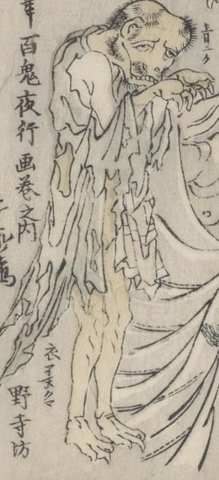

← 图鉴索引
野寺坊；ノデラボウ，男；オトコ

野寺坊。
著作者：河鍋暁斎／出典：親書誌：U426_nichibunken_0442：暁齋畫談／日付：2017／資源識別子：U426_nichibunken_0442_0030_0004
Copyright (c)2010- International Research Center for Japanese Studies, Kyoto, Japan. All rights reserved.